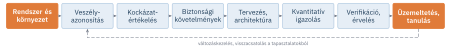
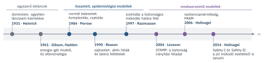
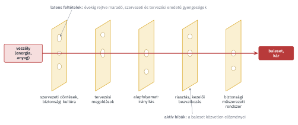
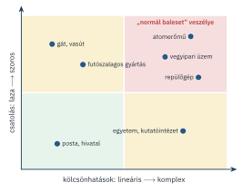
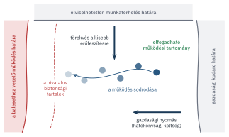

1. Miért hibáznak a rendszerek? Balesetek és balesetmodellek

A biztonságtechnika a balesetekből tanult meg mindent, amit tud. A szabványok előírásai, a tervezési elvek és az elemzési módszerek mögött szinte mindig egy-egy konkrét katasztrófa áll, amelyet utólag sokan „elkerülhetőnek” neveztek. Ebben a fejezetben hat jól dokumentált balesetet vizsgálunk meg, és megkeressük, mi a közös bennük. Ezután áttekintjük, hogyan gondolkodott a mérnöki és a pszichológiai szakirodalom a balesetek keletkezéséről az elmúlt száz évben. A fejezet célja nem a félelemkeltés, hanem a szemléletformálás: a későbbi módszerek akkor használhatók jól, ha értjük, milyen jelenségek ellen dolgoznak.
A fejezet végére képes leszel
- hat jelentős baleset (Therac-25, Ariane 5, Texas City, Buncefield, Boeing 737 MAX, Uber ATG) okait és tanulságait a vizsgálati jelentések alapján összefoglalni;
- megkülönböztetni a lineáris okláncmodelleket, az epidemiológiai modelleket és a rendszerszintű balesetmodelleket;
- a sajtszelet-modell, a Rasmussen-féle sodródás és a STAMP fogalmaival elemezni egy balesetet;
- megindokolni, miért nem elég a biztonsághoz az egyes alkatrészek megbízhatóságát növelni.
1.1. Mit tanulhatunk a balesetekből?
Edward Murphy amerikai mérnök nevéhez fűződik a mondás, hogy „ami elromolhat, az el is romlik”. A történet szerint 1949-ben egy gyorsulásmérési kísérletsorozatot kellett megismételni, mert a mérőátalakítókat fordítva szerelték be. A mondás szellemes, de a mérnök számára veszélyes is, mert azt sugallja, hogy a hiba sorsszerű. A balesetvizsgálatok tapasztalata ennél árnyaltabb: a súlyos balesetek ritkán egyetlen hibából fakadnak, és szinte mindig megelőzik őket figyelmeztető jelek, elmaradt intézkedések, rosszul értelmezett kockázatok.
A balesetvizsgálat célja ma már nem a bűnös megtalálása, hanem annak megértése, hogyan válhatott lehetővé a baleset, és hogyan lehet megakadályozni az ismétlődését. Ezt a szemléletet követik a független vizsgálószervek, például az amerikai Közlekedésbiztonsági Testület (NTSB), a Vegyipari Biztonsági Testület (CSB) vagy a francia polgári repülési balesetvizsgáló hatóság (BEA). Jelentéseik nyilvánosak, és a biztonságtechnika legfontosabb tananyagai közé tartoznak.
1.2. Hat baleset, hat tanulság
Az alábbi esetek különböző iparágakból származnak, és mindegyikük más okból vált a szakma közös emlékezetének részévé. A leírások a hivatalos vizsgálati jelentéseken és az azokat feldolgozó szakirodalmon alapulnak.
A Therac-25 sugárterápiás gyorsító két üzemmódban működött: kis intenzitású elektronnyalábbal és nagy intenzitású, céltárgyon átvezetett röntgensugárzással. Az elődmodellekben hardveres reteszelés akadályozta meg, hogy a nagy intenzitású nyaláb céltárgy nélkül érje a beteget. A Therac-25-ben ezt a reteszelést szoftveres ellenőrzés váltotta fel. Hat ismert balesetben a betegek a tervezett dózis sokszorosát kapták, több eset halálos kimenetelű volt (Leveson és Turner 1993).
A vizsgálat több egymást erősítő okot tárt fel. A szoftverben versenyhelyzet (race condition) volt: ha a kezelő gyorsan módosította a bevitt adatokat, a gép beállítása és a képernyőn látható érték eltérhetett egymástól. A hibaüzenetek rejtélyesek voltak („MALFUNCTION 54”), a kezelők megszokták, hogy egyszerűen továbblépnek. A gyártó az első bejelentések után nem tudta reprodukálni a hibát, és hosszú ideig kizártnak tartotta, hogy a szoftver okozza. A szoftvert nem vetették alá független felülvizsgálatnak, a régebbi modellekből átvett kódrészleteket újrafelhasználták, pedig azok korábban a hardveres reteszelés „árnyékában” működtek.
Tanulság: a szoftver nem hibázik véletlenszerűen, hanem szisztematikusan; a hardveres védelem kiváltása szoftverrel új veszélyeket teremt; a kezelőfelület és a hibajelzések tervezése biztonsági kérdés.
1996. június 4-én az Európai Űrügynökség új hordozórakétája az első repülésén mintegy negyven másodperccel a start után letért a pályájáról, és megsemmisült. A vizsgálóbizottság szerint az inerciális referenciarendszer (SRI) szoftvere egy 64 bites lebegőpontos értéket (a vízszintes sebességhez kapcsolódó változót) 16 bites előjeles egész számmá alakított, és a túlcsordulás kezeletlen kivételt okozott (Lions 1996). A kódot az Ariane 4-ből vették át, ahol a rakéta pályája miatt ez az érték soha nem nőhetett ekkorára. Az Ariane 5 nagyobb vízszintes gyorsulása mellett viszont igen. Ráadásul az érintett függvénynek a start után már nem volt szerepe.
A redundancia nem segített: a két SRI-egység ugyanazt a szoftvert futtatta, így ugyanabban a pillanatban, ugyanazért hibásodott meg. A fedélzeti számítógép a hibás egység diagnosztikai adatait repülési adatként értelmezte, és teljes kitérítést adott a fúvókáknak.
Tanulság: az újrafelhasznált komponens csak az eredeti feltételei között bizonyított; az azonos redundáns egységek közös okú hibája ellen a megtöbbszörözés nem véd; a követelmények és feltevések nyomon követése (mit tételezett fel a kód írója?) biztonsági kérdés.
2005. március 23-án a texasi finomító izomerizációs üzemének indításakor egy desztillálókolonnát túltöltöttek. A túlnyomás miatt nyíló biztonsági szelepeken keresztül éghető folyadék került egy légköri lefúvató tartályba és kéménybe, onnan a szabadba. A kialakuló gőzfelhő berobbant. Tizenöt ember meghalt, több mint százhetvenen megsérültek; a halálos áldozatok a közelben elhelyezett ideiglenes konténerirodákban tartózkodtak (U.S. Chemical Safety and Hazard Investigation Board 2007).
A CSB jelentése a technikai okok (hibás szintmérés, a magasszint-riasztás elmaradása, elavult lefúvató rendszer) mellett hangsúlyosan szervezeti okokat nevezett meg: költségcsökkentést a karbantartásban, a kezelők fáradtságát, a korábbi hasonló események figyelmen kívül hagyását, és azt, hogy a vállalat a munkabiztonsági mutatók (például a munkaidő-kieséses balesetek száma) javulását a folyamatbiztonság javulásának tekintette.
Tanulság: a személyi munkabiztonság és a folyamatbiztonság két különböző dolog, más mutatókkal mérhető; a kisebb események és a „majdnem balesetek” a nagy balesetek előjelei; a telepítési döntések (hová kerülnek az emberek) a kockázat részei.
2005. december 11-én hajnalban az angliai Buncefield üzemanyag-tárolójában egy tartályt túltöltöttek. A szintmérő megakadt, és állandó értéket mutatott, a független magasszint-kapcsoló pedig nem működött, mert egy szerelési és karbantartási hiba miatt hatástalan volt. A kiömlő benzin gőzfelhőt alkotott, amely berobbant és a környék több tartályára átterjedő tűzvészt okozott. Halálos áldozat nem volt, de negyvenhárom ember megsérült, és a kár Európa egyik legnagyobb ipari kára volt (Buncefield Major Incident Investigation Board 2008).
Tanulság: a papíron független védelmi rétegek a gyakorlatban közös gyengeséggel rendelkezhetnek (közös karbantartási gyakorlat, közös téves feltevés); a védelmi funkciót rendszeresen, valósághűen kell vizsgálni (proof test); a tervezett kockázatcsökkentés csak akkor valós, ha az üzemeltetés is fenntartja.
A Lion Air 610-es (2018. október 29.) és az Ethiopian Airlines 302-es (2019. március 10.) járatának lezuhanásában összesen 346 ember halt meg. Mindkét esetben a repülésvezérlés egy új funkciója, az MCAS (Maneuvering Characteristics Augmentation System) hibás állásszögjel alapján ismételten lefelé trimmelte a gépet. Az MCAS egyetlen állásszög-érzékelő jelére támaszkodott, ismételten aktiválódhatott, és a hatásköre a fejlesztés során megnőtt. A pilóták képzési anyagai nem írták le részletesen (Joint Authorities Technical Review 2019).
A nemzetközi szakértői vizsgálat (JATR) többek között azt állapította meg, hogy a funkció hibás működésének veszélyességi besorolása és a tanúsítás során tett feltevések (például hogy a pilóták néhány másodpercen belül felismerik és kezelik a helyzetet) nem követték a funkció módosításait.
Tanulság: egy biztonságkritikus funkció nem támaszkodhat egyetlen érzékelőre; a tervezés során módosuló funkciók veszélyelemzését újra kell értékelni; az emberi beavatkozásra vonatkozó feltevéseket igazolni kell, nem csak feltételezni.
2018. március 18-án éjjel az arizonai Tempe városában egy fejlesztés alatt álló önvezető tesztjármű halálosan elütött egy kerékpárját toló gyalogost. Az NTSB vizsgálata szerint a rendszer körülbelül 5,6 másodperccel az ütközés előtt észlelte a gyalogost, de többször átsorolta (jármű, egyéb objektum, kerékpár), és minden átsorolásnál elvetette a mozgáspályájának előzményeit. A jármű saját vészfékező funkcióját a tesztek idejére kikapcsolták, és a rendszer a beavatkozást a biztonsági vezetőre bízta, aki a vizsgálat szerint a baleset előtt a telefonján nézett videót (National Transportation Safety Board 2019).
Az NTSB a valószínű okok között a biztonsági vezető figyelmetlenségét, de a hozzájáruló tényezők között a vállalat elégtelen biztonsági kockázatértékelését, a kezelők figyelmének hiányzó felügyeletét és a „automatizálási elkényelmesedés” (automation complacency) kezelésének hiányát is megnevezte.
Tanulság: a passzív felügyeletre szoruló ember megbízhatatlan biztonsági tartalék; az érzékelés és osztályozás bizonytalanságát a rendszer architektúrájának kell kezelnie; a fejlesztési és tesztelési tevékenység maga is biztonsági kockázatot hordoz.
1.3. Közös mintázatok
A hat eset között évtizedek és iparágak húzódnak, mégis feltűnően hasonlóak. A 1.1. táblázat összefoglalja azokat a mintázatokat, amelyekre a könyv további fejezetei módszereket kínálnak.
| Mintázat | Példa | A könyv válasza |
|---|---|---|
| A hiba a specifikációban vagy a feltevésekben van, nem az alkatrészben | Ariane 5, Therac-25, 737 MAX | veszélyazonosítás (5–7. fejezet), követelmények nyomon követése (15. fejezet) |
| A redundáns egységek közös okból hibásodnak meg | Ariane 5, Buncefield | közös okú hibák modellezése (10. és 13. fejezet) |
| A védelmi rétegek idővel erodálódnak | Texas City, Buncefield | proof teszt, üzemeltetési fázis (13. fejezet) |
| A szoftver új, szisztematikus hibamódokat hoz | Therac-25, Ariane 5 | szoftverbiztonság (15. fejezet) |
| Az ember felügyelőként és tartalékként nem megbízható | Uber, 737 MAX | ember a rendszerben (16. fejezet) |
| Szervezeti nyomás és gyenge biztonsági kultúra | Texas City, Uber | biztonsági érvelés és menedzsment (17. fejezet) |
| Az új technológia a meglévő módszerek határain túl működik | Uber | SOTIF, gépi tanulás (18. fejezet) |
Két általános következtetés adódik. Az első, hogy a megbízhatóság és a biztonság nem ugyanaz. Az Ariane 5 szoftvere azt tette, amit specifikáltak; a Therac-25 szoftvere a specifikációja szerinti esetek túlnyomó többségében helyesen működött. Egy rendszer lehet megbízható és mégis veszélyes, és lehet kevéssé megbízható, mégis biztonságos (például ha minden hibájakor biztonságos állapotba áll). A 2. fejezet ezt a különbséget pontosan definiálja.
A második, hogy a balesetek mögött rendszerszintű okok állnak. Az alkatrészhiba, az emberi tévedés vagy a szoftverhiba közvetlen ok, de az, hogy ebből baleset lett, a rendszer felépítésén, a szervezet működésén és a szabályozási környezeten múlt. Ezt a felismerést követték a balesetmodellek.
1.4. A balesetmodellek fejlődése
A balesetmodell az a gondolati keret, amellyel a balesetek keletkezését magyarázzuk. A választott modell meghatározza, mit keresünk a vizsgálat során, és milyen intézkedéseket tartunk hatékonynak. A 1.1. ábra a legfontosabb modelleket mutatja időrendben.

1.4.1. Lineáris okláncmodellek
Herbert W. Heinrich biztosítási szakember 1931-ben megjelent könyvében a balesetet egymás után dőlő dominók sorozataként írta le: a társadalmi környezet és a személyes hiányosságok vezetnek a nem biztonságos cselekedethez vagy állapothoz, ez a balesethez, az pedig a sérüléshez (Heinrich 1931). Ha egy dominót kiveszünk, a lánc megszakad. Heinrich nevéhez fűződik az a sokat idézett, de módszertanilag gyenge állítás is, hogy a balesetek túlnyomó többségét emberi „nem biztonságos cselekedet” okozza.
A dominóelv egyszerű és jól kommunikálható, ezért ma is él például a gyökérok-elemzés (root cause analysis) naiv változataiban. Két korlátja van: a balesetet egyetlen láncra szűkíti, holott a valóságban több, egymással kölcsönható ok vezet hozzá, és könnyen az utolsó láncszemnél, a kezelő hibájánál áll meg.
1.4.2. Energia–gát modell
James Gibson és William Haddon az 1960-as és 1970-es években a balesetet a nem kívánt energiaátadás jelenségeként írta le (Haddon 1973). A kár akkor keletkezik, ha mechanikai, hő-, vegyi, villamos vagy sugárzási energia olyan mértékben jut el az emberhez vagy a védendő értékhez, amely meghaladja annak tűrőképességét. A megelőzés eszközei a gátak (barriers): az energia mennyiségének csökkentése, a felhalmozódás megakadályozása, a felszabadulás lassítása, a térbeli vagy időbeli elválasztás, a védendő érték ellenállóbbá tétele. Haddon tíz ilyen ellenstratégiát sorolt fel.
Az energia–gát gondolat a mai folyamatbiztonság alapja. A 11. fejezetben tárgyalt rétegzett védelem (LOPA) és a bow-tie diagram közvetlenül erre épül, és a 14. fejezetben tárgyalt inherens biztonság elve (kevesebb veszélyes anyag, alacsonyabb nyomás) is az energiaforrás csökkentéséről szól.
1.4.3. A sajtszelet-modell: aktív hibák és latens feltételek
James Reason pszichológus a Human Error (1990) és a Managing the Risks of Organizational Accidents (1997) című könyveiben a szervezeti balesetek magyarázatára vezette be a sokszor „svájci sajt modellnek” nevezett ábrázolást (Reason 1990, 1997). A rendszer védelmi rétegeit (szervezeti döntések, tervezés, irányítás, riasztás, védelmi rendszer) szeletekként képzeljük el, amelyeken lyukak vannak (1.2. ábra). Baleset akkor következik be, ha egy pillanatra minden szelet lyukai egy vonalba kerülnek, és a veszély átjut rajtuk.

Reason két hibatípust különböztet meg. Az aktív hibák (active failures) a frontvonalban dolgozók (kezelők, pilóták, karbantartók) tévedései és szabályszegései, amelyeknek azonnali hatásuk van. A latens feltételek (latent conditions) a tervezők, a vezetők és a szabályozók döntéseiből fakadnak: elégtelen képzés, félrevezető kezelőfelület, karbantartási hiányosság, időnyomás. Ezek évekig rejtve maradhatnak, amíg egy aktív hibával találkozva balesethez nem vezetnek. A modell legfontosabb üzenete, hogy a kezelő hibája gyakran csak a lánc utolsó, látható eleme; a tartós javulást a latens feltételek felszámolása hozza.
A sajtszelet-modell a gyakorlatban rendkívül népszerű, és a 2014-es jegyzet is ezzel szemléltette a független védelmi rétegek jelentőségét. Fontos azonban látni a korlátait: a lyukak „egy vonalba kerülését” nem magyarázza meg, a rétegeket egymástól függetlennek ábrázolja, és könnyen arra csábít, hogy egyszerűen több szeletet tegyünk a rendszerbe.
A sajtszelet-modell félreérthető üzenete, hogy minél több a szelet, annál biztonságosabb a rendszer. A valóságban az új réteg új hibamódokat, új bonyolultságot és hamis biztonságérzetet is hozhat. A kezelők például jobban támaszkodhatnak az automatikus védelemre, és ritkábban figyelnek a folyamatra. A rétegek csak akkor szorozzák a kockázatcsökkentést, ha valóban függetlenek egymástól. Ezt a 11. fejezetben a független védelmi réteg (IPL) szigorú kritériumaival fogjuk megfogalmazni.
1.4.4. Normál balesetek: komplexitás és csatolás
Charles Perrow szociológus az 1979-es Three Mile Island-i atomerőmű-baleset elemzése nyomán jutott arra a következtetésre, hogy bizonyos rendszerekben a balesetek elkerülhetetlenek, „normálisak” (Perrow 1984). Két jellemzőt emelt ki (1.3. ábra):
- interaktív komplexitás: a rendszer elemei váratlan, nem tervezett és nehezen átlátható módon hathatnak egymásra;
- szoros csatolás: a folyamatok gyorsan, kötött sorrendben és kevés tartalékkal futnak, így nincs idő beavatkozni, ha valami eltér a tervezettől.

Perrow szerint a jobb felső negyedbe eső rendszerekben a több független hiba váratlan kölcsönhatása előbb-utóbb balesethez vezet, és a redundancia tovább növelheti a komplexitást. Az elmélet vitatott, mert a magas megbízhatóságú szervezetek (például a repülőgép-hordozók vagy a légiforgalmi irányítás) kutatói kimutatták, hogy megfelelő szervezeti kultúrával ezek a rendszerek is tartósan biztonságosan működtethetők. A mérnök számára mégis fontos üzenetet hordoz: a komplexitás és a csatolás tervezési paraméter, és csökkentésük maga is biztonsági intézkedés.
1.4.5. Sodródás a határ felé
Jens Rasmussen dán mérnök és pszichológus 1997-es tanulmányában a biztonságot dinamikus egyensúlyként írta le (Rasmussen 1997). A rendszer működése egy olyan térben mozog, amelyet három határ fog közre (1.4. ábra): a gazdasági kudarc határa, az elviselhetetlen munkaterhelés határa és a balesethez vezető működés határa. A vezetés a hatékonyság növelésére, a dolgozók az erőfeszítés csökkentésére törekednek. Ez a két nyomás a működést lassan, észrevétlenül a biztonsági határ felé sodorja. Minden egyes lépés ésszerűnek tűnik, és mivel a baleset elmarad, a kisebb tartalék megszokottá válik.

A Texas City-i baleset jó példája ennek a sodródásnak: az elhalasztott karbantartások, a mellőzött eljárások és az elfogadott rendellenességek külön-külön nem okoztak balesetet, együtt viszont eltüntették a biztonsági tartalékot. A Rasmussen-modell üzenete, hogy a biztonságot nem lehet egyszer „beépíteni” a rendszerbe, hanem folyamatosan figyelni kell, és a határokat láthatóvá kell tenni a döntéshozók számára.
1.4.6. STAMP: a biztonság irányítási feladat
Nancy Leveson az MIT professzoraként a 2000-es évek elején fogalmazta meg a STAMP-modellt (Systems-Theoretic Accident Model and Processes), amelyet Engineering a Safer World című könyvében foglalt össze (Leveson 2011). A STAMP a balesetet nem hibák láncolataként, hanem irányítási problémaként értelmezi: a biztonság a rendszer emergens tulajdonsága, amely akkor áll fenn, ha a rendszer viselkedésére vonatkozó biztonsági korlátokat (safety constraints) a hierarchikus irányítási struktúra minden szintje érvényesíti. A baleset oka az, hogy egy korlát nem érvényesült: az irányító hibás vagy hiányos folyamatmodell alapján döntött, a visszacsatolás hiányzott vagy késett, vagy az irányító beavatkozása nem hatott.
Ebben a szemléletben az alkatrészhiba csak egy a lehetséges okok közül. A baleset akkor is bekövetkezhet, ha egyetlen alkatrész sem hibásodik meg, de az alkatrészek kölcsönhatása nem biztonságos. Erre a Mars Polar Lander 1999-es elvesztése a klasszikus példa: a leszállóláb kinyitásakor keletkező rezgést a szoftver a talajérés jelének értelmezte, és idő előtt leállította a fékezőhajtóművet. Az érzékelő és a szoftver is a specifikációja szerint működött.
A STAMP-ra épülő veszélyelemzési módszert, az STPA-t a 7. fejezet részletesen tárgyalja.
1.4.7. Safety-I és Safety-II
Erik Hollnagel és a rezilienciamérnökség (resilience engineering) képviselői arra hívták fel a figyelmet, hogy a hagyományos biztonságtechnika (Safety-I) a ritka hibákból és balesetekből tanul, és a biztonságot a nem kívánt események hiányaként határozza meg (Hollnagel 2014). A Safety-II szemlélet szerint a biztonság az a képesség, hogy a rendszer változó körülmények között is sikeresen működjön. Ezt pedig leginkább a jól működő esetekből, az emberek folyamatos alkalmazkodásából lehet megérteni. A két szemlélet nem zárja ki, hanem kiegészíti egymást: a tervezésnél a Safety-I módszerei (veszélyazonosítás, kockázatcsökkentés), az üzemeltetésnél a Safety-II szemlélete (a mindennapi alkalmazkodás megértése és támogatása) egyaránt szükséges.
1.5. Mit jelent mindez a mérnök számára?
A balesetmodellek nem egymást felváltó divatok, hanem egymásra épülő rétegek. A könyv módszertana mindegyikből merít:
- a redukcionista módszerek (FMEA, hibafa, megbízhatósági blokkdiagram, Markov-modell) az alkatrészhibák és kombinációik hatását számszerűsítik, és nélkülözhetetlenek a biztonsági funkciók integritásának igazolásához (III. rész);
- a gát- és rétegszemlélet (LOPA, bow-tie) a kockázatcsökkentés felépítését teszi átláthatóvá (11. fejezet);
- a rendszerelméleti szemlélet (STAMP, STPA) a kölcsönhatásokból, a specifikációs hibákból és az ember–automatizálás együttműködéséből fakadó veszélyeket tárja fel (7. fejezet);
- a szervezeti és emberi szemlélet (Reason, Rasmussen, Hollnagel) az üzemeltetés és a biztonsági kultúra kérdéseire figyelmeztet (16. és 17. fejezet).
A ReaktorVéd reaktorát exoterm reakció hőfejlődése teszi veszélyessé. A Texas City- és a Buncefield-baleset közvetlenül releváns: mindkettőben túltöltés és a védelmi rétegek eróziója vezetett a katasztrófához. A tervezőcsapat ezért már a koncepciós fázisban három kérdést tesz fel: Mennyi energiát tárolunk, és csökkenthető-e (kisebb adag, lassabb adagolás)? Mely védelmi rétegek valóban függetlenek egymástól? Hogyan biztosítjuk, hogy a védelmi funkciók az üzemeltetés évei alatt is működőképesek maradjanak?
A VészFék fejlesztőcsapata az Uber-baleset jelentéséből két tervezési elvet szűr le. Az érzékelés bizonytalanságát (az objektum osztályozásának ingadozását) a funkció logikájának kell kezelnie, nem a vezetőnek. Továbbá a rendszer nem építhet olyan emberi beavatkozásra, amelyre a vezetőnek nincs ideje vagy figyelme. Ezek a szempontok a 18. fejezetben, a rendeltetésszerű funkció biztonságánál (SOTIF) térnek vissza.
A gyakorlati útmutató első feladata egy választott, nyilvános balesetvizsgálati jelentés elemzése a sajtszelet-modell és a STAMP szemléletével. A feladatlap mintapromptokat is ad ahhoz, hogyan lehet egy nagy nyelvi modellt kritikus olvasótársként használni a jelentés feldolgozásához (lásd a gyakorlati útmutató 1. laborját).
- A súlyos balesetek ritkán egyetlen hibából fakadnak; mögöttük specifikációs hibák, közös okú hibák, erodálódó védelmi rétegek, emberi tényezők és szervezeti nyomás áll.
- A megbízhatóság (a specifikáció szerinti működés) és a biztonság (a nem elfogadható kár elkerülése) két különböző tulajdonság.
- A balesetmodellek a lineáris okláncoktól (Heinrich) az energia–gát modellen és az epidemiológiai modelleken (Reason) át a rendszerszintű modellekig (Rasmussen, STAMP, Safety-II) fejlődtek.
- A modern biztonságtechnika a redukcionista, a gát-, a rendszerelméleti és a szervezeti szemléletet együtt alkalmazza.
- Miért nem védett a két inerciális referenciaegység az Ariane 5 balesete ellen?
- Mi a különbség Reason fogalmai szerint az aktív hiba és a latens feltétel között? Adj egy-egy példát a Texas City-i balesetből!
- Hogyan magyarázza a Rasmussen-modell, hogy egy üzem évekig baleset nélkül működik, majd egyszer csak súlyos baleset történik?
- Lehet-e baleset akkor, ha a rendszer minden eleme a specifikációja szerint működik? Indokold egy példával!
Megoldás
- Mert ugyanazt a szoftvert futtatták, így ugyanaz a bemenet ugyanabban a pillanatban mindkettőben ugyanazt a kezeletlen kivételt váltotta ki. Ez közös okú hiba; ellene az azonos egységek megtöbbszörözése nem véd, csak a diverzitás (eltérő kialakítás) vagy a hiba okának megszüntetése.
- Az aktív hiba azonnali hatású, a frontvonalban elkövetett tévedés vagy szabályszegés (például a kolonna túltöltése az indításkor, a szintjelzés figyelmen kívül hagyása). A latens feltétel tervezési vagy szervezeti eredetű, rejtett gyengeség (például az elavult lefúvató rendszer, a kezelők túlterhelése, a karbantartási költségek csökkentése, az ideiglenes irodák rossz elhelyezése).
- A gazdasági nyomás és a kisebb erőfeszítésre való törekvés lassan csökkenti a biztonsági tartalékot. Mivel a baleset sokáig elmarad, minden kisebb lépés elfogadottá válik, és a működés észrevétlenül a biztonsági határig sodródik. Ekkor már egy kis zavar is elegendő a balesethez.
- Igen. A STAMP szerint a baleset az elemek nem biztonságos kölcsönhatásából is fakadhat. Példa a Mars Polar Lander: a lábak kinyitásakor keletkező jelet a szoftver a talajérés jelének vette, és leállította a hajtóművet, holott minden komponens a specifikációja szerint működött. A hiba a specifikációban (a kölcsönhatás figyelmen kívül hagyásában) volt.
- Leveson, N. G. (2011): Engineering a Safer World. MIT Press – nyílt hozzáférésű; a 2. és 3. fejezet a balesetmodellek kritikai áttekintése (Leveson 2011).
- Reason, J. (1997): Managing the Risks of Organizational Accidents. Ashgate – a latens feltételek és a szervezeti balesetek klasszikus műve (Reason 1997).
- Rasmussen, J. (1997): Risk management in a dynamic society. Safety Science 27, 183–213 (Rasmussen 1997).
- A vizsgálati jelentések: Leveson és Turner (1993) a Therac-25-ről, Lions (1996) az Ariane 5-ről, a CSB (2007) a Texas City-i és az NTSB (2019) a tempei balesetről.